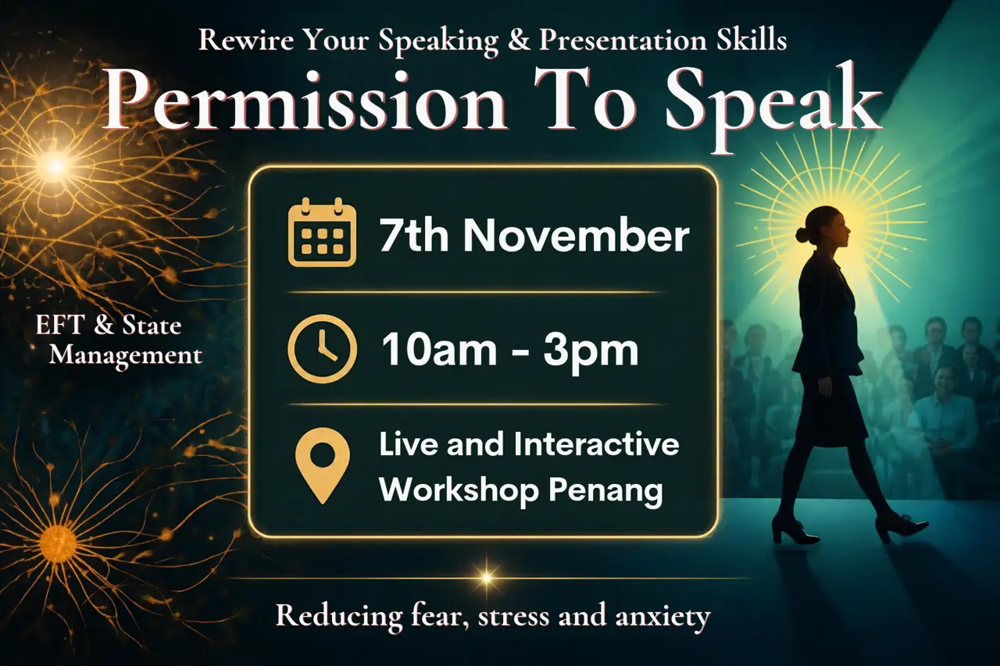
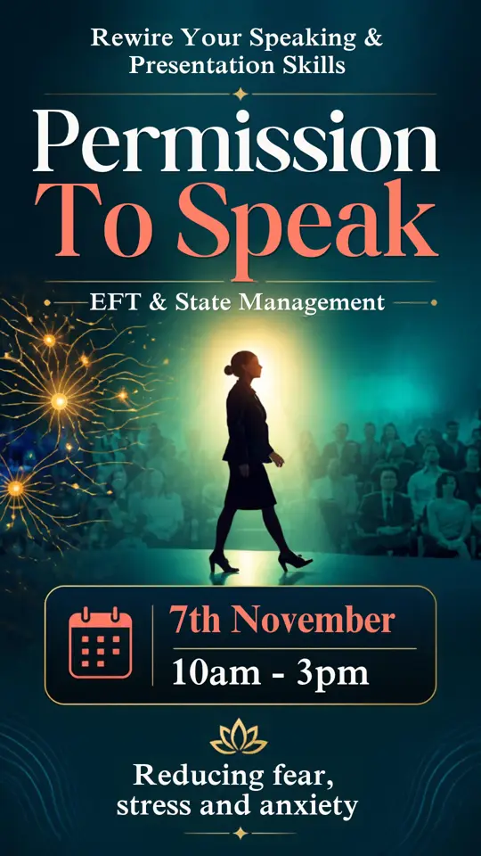

Course 2 of the Rewiring Your Speaking & Presentation Skills program. A live 4-hour workshop for coaches, trainers and career-changers who are ready to stop pushing through fear and start managing the state it comes from.
You know your material. You’ve prepared. Then the moment arrives and your mind goes blank, or you rush, or you over-explain, or you smile too much and agree to things you don’t mean.
That is not a talent problem or a character flaw. It is a state problem, and states can be learned, mapped and managed.
On 7 November you get a method, a map of your inner territory, and a first practice you can start using the next morning.
Rewiring Your Speaking & Presentation Skills is a progression, not a set of stand-alone events.
Your place in the room builds the base for everything after it.
Your performance on stage was decided long before you stepped onto it. What you did all week, how loaded your nervous system already was, and how much attention was left over set the bandwidth you actually have in the room.
When that bandwidth runs short, the nervous system takes over with one of four automatic responses. Which one is yours?
Most people have a default. Naming yours is the first step to changing it.
State management is the skill of noticing what state your nervous system is in, choosing how to respond, and returning to a settled baseline faster.
It has three parts:
It also has a daily side. Mental, emotional and nervous system hygiene, practised regularly, builds spare bandwidth before the high-stakes day arrives. You don’t earn calm on the day. You bank it before.
A settled presence tends to settle the people around it. That is why this skill matters beyond your own performance.
EFT stands for Emotional Freedom Techniques, often called tapping. You tap with your fingertips on specific points on the face and upper body while you bring a stressor to mind. In this workshop it is one of the tools you use to bring your state down so you can think and act.
How we use it: as a skill for state regulation and composure. It isn’t a replacement for medical or psychological care, and we don’t claim it cures anything. You learn it as a practical tool, then decide how it fits your life.
This is the part most speaking courses never touch.
Money worry takes attention. In a 2013 study published in Science, prompting people who were financially stretched to think about money problems lowered their performance on cognitive tasks. The researchers’ explanation is that financial worry consumes mental bandwidth, leaving less for everything else. It is the same bandwidth you need to speak.
Earning often depends on being seen. Pitching, pricing, publishing, asking, following up and saying yes or no all require visibility. That is where the 4F responses show up around money:
Self-doubt makes this worse. Higher levels were linked to a greater chance of receiving no outside funding.
What we do about it: you learn to spot which response fires in your own money and visibility moments, regulate it, and take the action anyway. The next course, Hidden Resistance, goes deeper into these blocks.
Saturday 7 November 2026 · 10:00am to 3:00pm
Bangunan Lip Sin, Sungai Dua, Gelugor 11700, Penang

Staying composed is half of it. The other half is knowing what you are standing up to say, and why.
Have you been asked to present, train or lead a meeting without knowing what you are supposed to say?
Do you sit in front of a blank document or slide deck and go blank for a long time?
Do you rehash existing documents into slides just to get the job done?
Have you stood in front of a room or clients and felt people were there only because they had to be?
Slides existing is not the job done.
The presentation is the product. Building one is product development: you take what you already know and shape it into something you can articulate, deliver and take to market.
Every presentation and sales conversation is a marketing job, so the work begins before the first slide. When you have already externalised what lives in your head, the presentation itself is the easy part. The same method adapts across the full spectrum of presentations, and you don’t need a product or marketing background to use it.
It is especially valuable if you aspire to be a thought leader, author, key accounts or business development head, presenter or trainer.
Lovinia Mak is a Malaysian learning design specialist, corporate trainer and professional coach based in Penang. She has been building her training and coaching practice since 2011, and is the Principal Trainer and Founder of Clarity Awareness Cognitive Architecture Systems, an organisation focused on human-centric soft skills, learning design and cognitive development. She created the Clarity Awareness Framework you learn in this program.
14 / BEFORE THE DAYArrive by: 9:45am
Bring: paper, pen, snacks
Optional prep (five minutes): this week, notice which of the four responses shows up first when you’re put on the spot. Just notice. Don’t fix it.
15 / FAQEmotional Freedom Techniques, also called tapping. You use it here as a state-regulation tool.
No. It is a skills workshop. It doesn’t replace medical or psychological care.
No. You leave with a foundation for self-practice, a method and a path to help others.
Yes, if you’ve ever lost composure under pressure or avoided being seen.
A map of inner states and a diagnostic lens you can build your own programmes on.
No. It works on the state that sits underneath the actions income depends on.